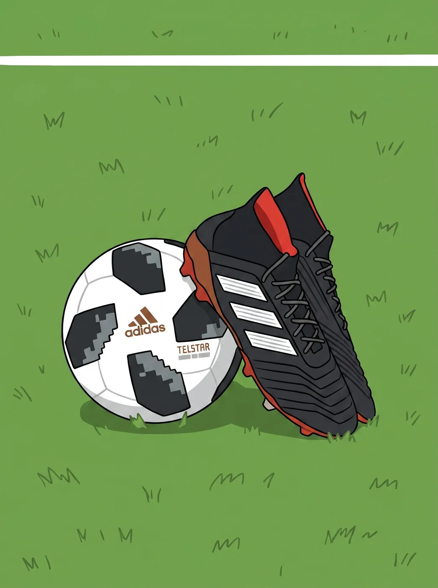
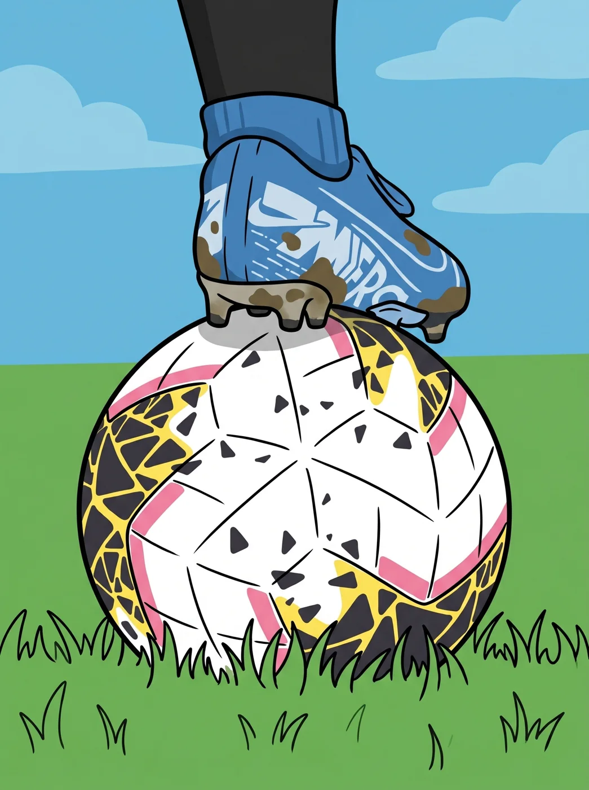
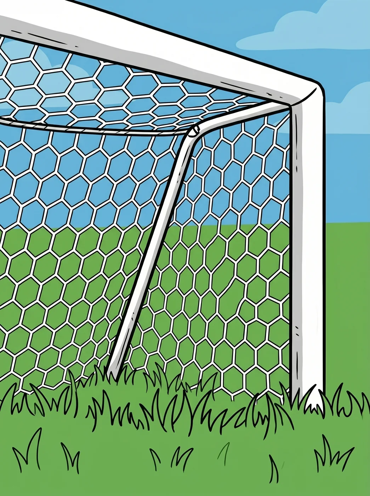

「足」夠了解？
看懂規則，
也看見臺灣的足球故事。



把足球，放進日常。
網站用影片與問答整理規則，IG 用短篇圖文接著聊。
從同一個問題出發，換個方式再看一次。
足球規則
先看一段影片，再到球場上找出規則的位置。
1 分鐘看懂足球規則
1. 比賽場地
1分鐘看懂足球場2. 足球
這顆球的祕密3. 球員
新手上場不尷尬4. 球員裝備
上場穿什麼5. 裁判
足球判官新規定6. 其他執法人員
超級智囊團7. 比賽時間
不只 90 分鐘？8. 重開比賽
足球怎麼開始9. 判定出界
這球出界了沒？10. 決定勝負
刺激 PK 大戰11. 越位
挑戰最難規則12. 犯規及不正當行為
犯規與紅黃牌13. 自由球
直接與間接自由球14. 罰球點球
禁區內的判決15. 擲球入場
邊線外重新開球16. 球門球
球門區的重啟17. 角球
角球區的進攻互動球場：點選位置，看看規則
點擊解鎖專屬規則影音
點擊左側球場任意區域，我不僅會告訴你規則，還會為你準備好對應的解析影片喔！
臺灣足球史
沿著五個時期，看看足球如何走進臺灣人的生活。
歷史重大里程碑與影音紀事
1910 - 1920年代
校園足球的傳入與萌芽
松岡正男成立蹴球部、宣教士萬榮華引進足球，校園間的賽事逐漸增加。
本期影音紀事
1930 - 1945年
日治時期的巔峰與戰時體制
全島蹴球大會開打，長榮中學進軍「足球甲子園」，足球也受到戰時體制影響。
本期影音紀事
1946 - 1960年代
戰後初期與港腳金牌時代
省運會衝突爆發，徵召香港球員組成「港台聯軍」蟬聯亞運金牌與默迪卡盃。
本期影音紀事
1970 - 1980年代
外交轉折與木蘭奇蹟
外交困局開啟大洋洲流浪時期；木蘭女足亞洲盃三連霸，震撼國際足壇。
本期影音紀事
1990年代至今
全球化潮流與俱樂部崛起
重返亞足聯，海歸球員開啟全新職業化風潮，基層社區經營興起。
本期影音紀事
歐洲五大聯賽推廣地圖
一分鐘入坑指南：視覺化聯賽特點
點擊下方聯賽標籤，解鎖專屬的「一分鐘帶你入坑」影音解析與聯賽特色！
足球小白必看的歐洲五大聯賽
五大聯賽指英格蘭、西班牙、德國、義大利與法國的頂級男子足球聯賽。先選一個聯賽，試著留意球隊如何推進、搶回球權，以及創造射門。各隊的踢法也會隨教練與球員不同。
英格蘭超級聯賽 (Premier League)
接球空間 · 攻防轉換看英超時，可以留意球員在接球前如何找空間，以及失去球權後的逼搶。從邊路突破、快速反擊到定位球，不同球隊有不同的進攻方法。
西班牙甲級聯賽 (La Liga)
控球節奏 · 邊路突破看西甲時，可以留意中場如何透過短傳調整節奏，邊鋒又如何用假動作、變速和內切製造空間。皇家馬德里與巴塞隆納的交手稱為「國家德比」。
德國甲級聯賽 (Bundesliga)
快速推進 · 前場跑位看德甲時，可以留意搶回球權後的快速推進、前鋒的跑位，以及守門員如何參與後場傳球。拜仁慕尼黑與多特蒙德都是常見的入門觀賽選擇。
義大利甲級聯賽 (Serie A)
防線站位 · 插上進攻看義甲時，可以留意防線的站位、盯人與補位；進攻端則觀察邊後衛插上、中場前進，以及前鋒如何拉開防守。戰術安排會隨球隊與對手調整。
法國甲級聯賽 (Ligue 1)
一對一 · 位置流動看法甲時，可以留意邊路的一對一、對抗後如何護球，以及年輕球員的跑位。以登貝萊為例，左右腳都能處理球，讓防守者難以預測他要走外線還是內切。
球員位置詳情
歷史年表詳細紀事
請點擊左側年份
解鎖該年度的詳細歷史事件
足球情境問答
從下方抽一張卡。每回合 10 題，答對得 10 分；答完會看到原因。